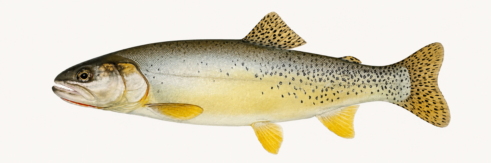

Research Focus
Yellowfin Cutthroat Trout
Oncorhynchus clarkii macdonaldi
Historically associated with Twin Lakes and the upper Arkansas Basin, Yellowfin cutthroat may have represented the native Arkansas Basin cutthroat lineage. One working idea is that large lake-form fish and smaller stream-resident fish were part of the same lineage, with juveniles or small adults possibly confused with early “greenback” records.